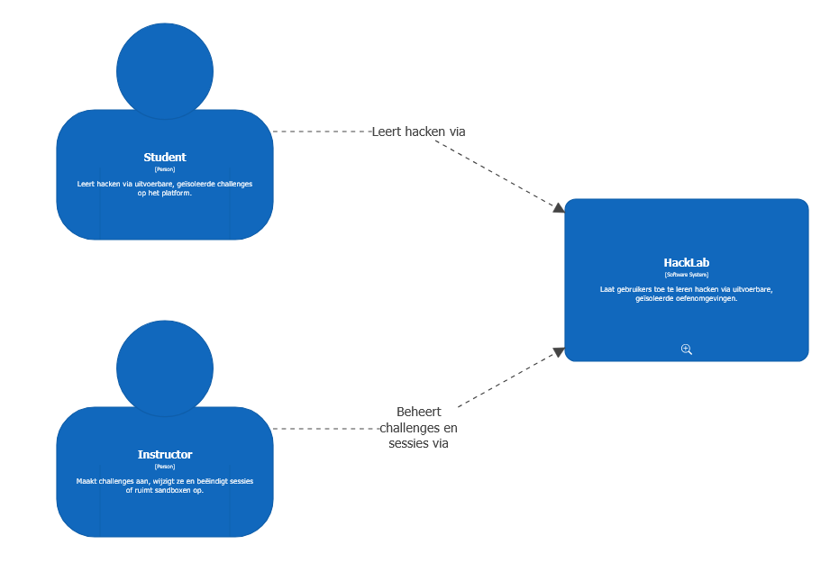
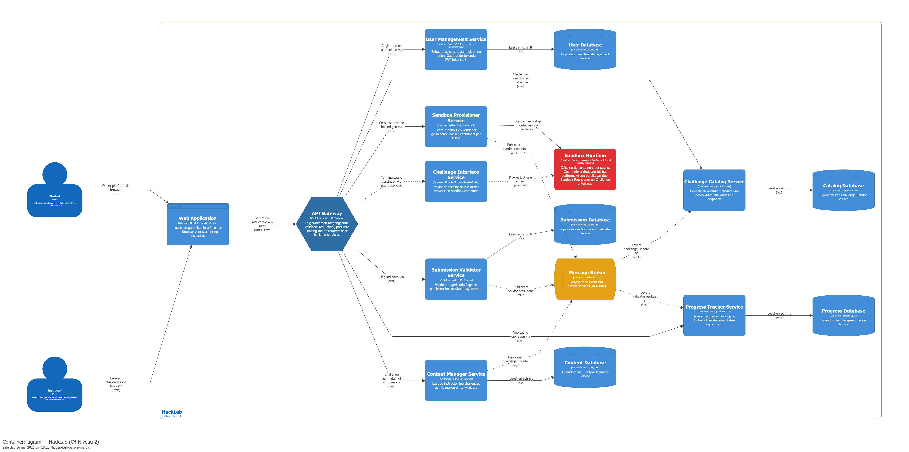

Doel van de presentatie
We tonen hoe de architecturale keuzes voortvloeien uit de karakteristieken van het systeem, hoe ze verantwoord zijn via ADR's, en hoe de POC's de meest uitdagende beslissingen technisch valideren.
Een platform om gebruikers te leren hacken via uitvoerbare, geïsoleerde voorbeelden.
We tonen hoe de architecturale keuzes voortvloeien uit de karakteristieken van het systeem, hoe ze verantwoord zijn via ADR's, en hoe de POC's de meest uitdagende beslissingen technisch valideren.
Goedemiddag. Wij stellen vandaag de architectuur voor van HackLab, een platform om gebruikers te leren hacken via uitvoerbare voorbeelden, vergelijkbaar met TryHackMe.
De klantvraag was bijzonder kort: "een systeem om gebruikers te leren hacken via uitvoerbare voorbeelden." Die beknoptheid is opzettelijk — wij moeten die vraag architecturaal interpreteren. Dat is precies wat we vandaag tonen.
De rode draad: we vertrekken vanuit de karakteristieken van het systeem, leiden daaruit de logische componentenverdeling af, onderbouwen vervolgens de architecturale stijlkeuze en de bijkomende beslissingen via ADR's, en bewijzen de meest uitdagende aspecten via vier proofs of concept.
HackLab is geen gewone leersite. Het sleutelwoord is "uitvoerbare voorbeelden": gebruikers voeren echte exploits en aanvalscode uit. Dat maakt security een fundamentele randvoorwaarde, niet een optionele feature.
Het architecturale kernprobleem is dat elke actieve gebruiker een volledige geïsoleerde omgeving nodig heeft die rekenkracht verbruikt. Als één omgeving crasht — of opzettelijk gesaboteerd wordt — mag dit de rest van het systeem niet raken.
De vergelijking met TryHackMe helpt de verwachtingen te concretiseren: geïsoleerde labs, challenges per categorie, voortgangsbeheer, moeilijkheidsniveaus.
| Karakteristiek | Expliciet in klantvraag? | Top 3? | Verantwoording |
|---|---|---|---|
| Security | Nee (impliciet) | ★ Ja | Gebruikers voeren exploits uit. Isolatie is een structurele randvoorwaarde. |
| Fault Tolerance | Nee (impliciet) | ★ Ja | Een crashende sandbox mag andere gebruikers of het platform nooit raken. |
| Scalability | Nee (impliciet) | ★ Ja | Elke actieve gebruiker verbruikt een volledige omgeving. De sandbox-laag moet onafhankelijk schalen. |
| Availability | Nee (impliciet) | Nee | Uitval onderbreekt actieve leersessies. HA is een eis, maar minder bepalend dan de top 3. |
| Extensibility | Nee (impliciet) | Nee | Nieuwe challenges en kwetsbaarheden moeten toevoegbaar zijn zonder core-wijzigingen. |
| Elasticity | Nee (impliciet) | Nee | CTF-events en schoolperiodes veroorzaken pieken. Opschalen en afschalen moet mogelijk zijn. |
| Configurability | Nee (impliciet) | Nee | Beginner vs. gevorderde gebruiker: persoonlijk leerpad en moeilijkheidsgraad. |
De cursus vraagt 7 karakteristieken te documenteren met een top-3. We volgen de tabel zoals die in de les getoond werd: expliciet of impliciet in de klantvraag, en top-3 aanduiding.
Alle 7 zijn impliciet: de klant omschrijft enkel de functionaliteit, niet de eigenschappen. Dat is typisch voor een klantvraag.
De top-3 zijn Security, Fault Tolerance en Scalability. Die drie zijn niet willekeurig gekozen: ze vloeien rechtstreeks voort uit de aard van het systeem. Elke sandbox bevat actief gevaarlijke code. Dat legt de architecturale lat hoog voor isolatie, herstel bij uitval en onafhankelijke schaalbaarheid.
De vuistregel uit de cursus: je kan niet alles kiezen. "Good, cheap, fast — pick any two." De top-3 bepaalt de architecturale stijlkeuze.
Typische user journey van een student:
Elke stap mapt op een logische component. Sterk gerelateerde stappen kunnen samen.
Toegevoegde actor: Beheerder/Instructor
→ Dit levert de Content Authoring component op, die de workflow-analyse alleen niet oplevert.
Componenten worden bepaald vóór een architecturale stijl gekozen wordt. De cursus geeft twee technieken: workflow approach en actor/action approach.
De workflow approach vertrekt vanuit een typische user journey: de student meldt aan, kiest een challenge, start een sandbox, voert code uit, dient een flag in en bekijkt zijn score. Elke stap levert een component op.
De actor/action approach voegt de instructor-acties toe. Die analyse levert de Content Authoring component op — die zou de workflow-analyse alleen niet opleveren, omdat de instructor geen typische student-journey doorloopt.
Daarna volgen nog stap 2 (requirements toewijzen aan componenten), stap 3 (cohesie analyseren — entity trap vermijden) en stap 4 (toetsen aan de top-3 karakteristieken).
Registratie, authenticatie, toegangscontrole, sessievalidatie.
Profieldata, niveau-instellingen, voortgang, leerpad.
Challenges ontsluiten, catalogus bijhouden, filtering.
Sessielevenscyclus beheren, sandbox-opstart aanvragen.
Code en exploits uitvoeren, output teruggeven, sandbox resetten/opruimen.
⚠ Geïsoleerd — bevat onbetrouwbare code
Flags valideren, score bepalen, feedback genereren.
Challenges aanmaken en wijzigen. Gevonden via actor/action analyse.
De twee analyses leveren 7 logische componenten op. Dit zijn geen services, geen Docker containers — het zijn conceptuele bouwblokken met een duidelijk afgebakende verantwoordelijkheid.
De Sandbox Runtime is rood gemarkeerd: dit is de component die effectief onbetrouwbare code uitvoert. Die component vereist de sterkste isolatie, heeft de hoogste impact op security en fault tolerance, en bepaalt mee de stijlkeuze.
De koppeling met de top-3 karakteristieken is direct zichtbaar: security en fault tolerance vereisen dat Sandbox Runtime volledig geïsoleerd kan falen zonder de rest te raken. Scalability vereist dat die component onafhankelijk kan opschalen.
De mapping van logische componenten naar containers volgt later. Eerst de stijlkeuze.
Gelaagd ✗
Technisch · Monolitisch
Valt af: fault tolerance en scalability onhaalbaar.
Microkernel ✗
Technisch · Monolitisch
Valt af: fault tolerance onvoldoende door monolitisch deployment.
Modulaire monoliet ②
Domein · Monolitisch
Tweede keuze: grenzen al vastgelegd, migratie naar MS is de bekende weg.
Microservices ✓
Domein · Gedistribueerd
Enige stijl die de top-3 structureel garandeert.
De cursus verplicht alle stijlen in overweging te nemen. We doen dat expliciet aan de hand van de top-3 karakteristieken.
Gelaagde architectuur valt af: de Sandbox Runtime kan niet onafhankelijk schalen en een crash treft het hele systeem. Dat druist in tegen fault tolerance en scalability.
Microkernel valt af om dezelfde reden: het deployment is monolitisch. Een plugin-crash kan de kern destabiliseren. De extensibility-voordelen zijn reëel maar onvoldoende om de fault tolerance-tekortkoming te compenseren.
Modulaire monoliet is de tweede keuze. De domeinpartitionering sluit perfect aan bij onze logische componenten. Maar het is nog steeds alles-of-niets deployment — de Sandbox Runtime kan niet apart schalen of falen.
Microservices is de keuze: het is de enige stijl die toelaat dat de Sandbox Runtime volledig geïsoleerd draait, onafhankelijk schaalt en faalt zonder andere services te raken. De hogere complexiteit is geen optie maar een noodzakelijke kost van de karakteristieken.
Microservices zijn duur. De cursus is daar heel eerlijk over: de star-ratings tonen dat microservices hoog scoren op schaalbaarheid en fouttolerantie maar laag op eenvoud en performance door overhead.
We accepteren die complexiteit bewust omdat de alternatieve kost — een systeem dat niet fault-tolerant of schaalbaar is voor sandbox-omgevingen — onaanvaardbaar is voor dit specifiek systeem.
De complexiteit beheersen we via de bijkomende ADR's: data ownership (ADR 003) en communicatiemodel (ADR 002) zijn de twee grootste uitdagingen bij microservices, en beiden krijgen een eigen ADR.
Als het team kleiner zou zijn dan 4 of het budget strakker, zou de modulaire monoliet de keuze zijn. De les toont het spectrum: vanuit een modulaire monoliet kan je later services afsplitsen naarmate de domeinkennis groeit.
ADR 002 kiest een hybride communicatiemodel. De cursus toont in les 3 aan de hand van de Two Many Sneakers case de drie opties: web services, queues en topics. De vergelijkingstabel maakt de trade-offs expliciet.
We gebruiken REST voor tijdskritische calls waarbij de gebruiker op een antwoord wacht. We gebruiken RabbitMQ queues voor events waarbij de aanroeper niet hoeft te wachten op verwerking.
Het voorbeeld op de slide is het duidelijkste geval: een student dient een flag in en wil direct weten of die correct is. Dat is synchroon. Maar de score opslaan in de Progress Tracker hoeft niet meteen — dat kan asynchroon via een queue. Als de Progress Tracker tijdelijk offline is, gaat het bericht niet verloren.
De geaccepteerde complexiteit: we hebben queue-infrastructuur nodig, asynchrone flows zijn moeilijker te debuggen, en eventual consistency moet bewust aanvaard worden.
| Service | Schema | Wat er in zit | Communicatie voor data van anderen |
|---|---|---|---|
| User Management | users | Accounts, rollen, wachtwoorden | JWT-token (ADR 005) |
| Challenge Catalog | catalog | Challenge-metadata, leerpaden | REST of queue-event |
| Submission Validator | submissions | Ingediende antwoorden, flags | Queue-event naar Progress Tracker |
| Progress Tracker | progress | Scores, voortgang, achievements | Eigen data alleen |
| Content Manager | content | Challenge-definities, sandbox-specs | Queue-event naar Catalog |
ADR 003 is de directe uitwerking van het data ownership principe uit les 7 (StayHealthy, Inc. case). De kernregel: geen enkele service leest of schrijft rechtstreeks in het schema van een andere service.
Concreet: als de Submission Validator de naam van de gebruiker wil tonen bij een score, mag die niet direct in de users-tabel van User Management kijken. Die informatie komt via de JWT-token of via een API-call.
Dit kost iets: JOINs over servicegrenzen zijn niet mogelijk, data moet soms gedupliceerd worden, en eventual consistency is een reëel fenomeen. Maar de winst is groter: schemawijzigingen in één service breken andere services niet.
Implementatiekeuze voor de POC en voor een kleine productie: alle schema's op één fysieke databaseserver, maar strikte scheiding per service via afzonderlijke databases. Netwerkconfiguratie verhindert directe toegang.
Snel, maar te zwak voor echte exploits.
Beste balans tussen security, snelheid en haalbaarheid.
Sterker, maar te zwaar voor versie 1.
cap_drop: ALL — minimale rechtenread_only: true — read-only filesystemno-new-privileges: true — geen privilege escalationVM’s bieden sterkere garanties, maar verhogen de opstarttijd en operationele complexiteit. Voor een leerplatform is snelle sandbox-start belangrijk.
Governance: geen privileged containers zonder nieuwe ADR.
ADR 004 vertaalt onze belangrijkste karakteristiek, security, naar een concrete architecturale keuze.
Omdat gebruikers echte exploits uitvoeren, is de sandbox de gevaarlijkste component. Procesisolatie is daarom te zwak. VM-isolatie is veiliger, maar te zwaar en trager voor versie 1.
Daarom kiezen we voor Docker containers met een strikte configuratie: minimale rechten, read-only filesystem, geen privilege escalation, resource limits en een geïsoleerd netwerk.
We erkennen wel dat containerisolatie geen perfecte garantie is. Daarom is governance belangrijk: geen privileged containers en elke wijziging aan de sandbox-configuratie moet via review.
Als elke service de authenticatieservice raadpleegt bij elk request, wordt User Management een single point of failure en een performance-bottleneck. Dit druist in tegen availability en scalability.
Bij een groter budget: Keycloak als volwaardige identity provider (demo in les 9). Voor ons team: zelfgebouwde JWT-service is haalbaar en onderhoudbaar.
ADR 005 is de architecturale uitwerking van de security-karakteristiek op service-niveau. Het platform heeft studenten, instructors en beheerders — elke service moet weten wie een request doet en of die persoon de actie mag uitvoeren.
We kozen een hybride aanpak. User Management is de authorization server (term uit de OAuth-les): die geeft JWT-tokens uit ondertekend met een private RSA-key. Andere services zijn resource servers: ze valideren het token met de public key zonder User Management te contacteren.
Het grote voordeel: als User Management uitvalt na het uitgifte van tokens, blijven andere services werken. Geen single point of failure bij runtime. Dit is precies wat de OAuth-les toont als het voordeel van asymmetrische cryptografie en gedistribueerde validatie.
De credentials voor de keys worden via Docker Swarm secrets verspreid — zelfde patroon als de RabbitMQ Erlang cookie in de labo's.

HackLab heeft bewust geen externe authentication provider (geen GitHub OAuth, geen Google). User Management is onze eigen authorization server — conform ADR 005.
Bij een groter budget: Keycloak als externe identity provider. Voor versie 1 is een eigen JWT-service haalbaar en volledig onder controle.
Het systeemcontextdiagram toont het systeem op het hoogste niveau: welke mensen gebruiken het, en welke externe systemen zijn er?
Er zijn twee actoren: de Student die challenges uitvoert, en de Instructor die challenges aanmaakt en beheert.
Er zijn geen externe platformen. Dit is een bewuste keuze die ook bij de feedback op de diagrammen als punt naar voren kwam. We gebruiken geen GitHub OAuth of Google login omdat onze eigen User Management service de authorization server is (ADR 005). Als er een externe identity provider nodig was, zou die hier als extern systeem verschijnen.

Dit is de enige container die onbetrouwbare, door gebruikers geschreven code uitvoert. Rood markeert de veiligheidsgrens van het systeem.
Het containerdiagram toont de deploybare eenheden en hun communicatie. De legende is bewust toegevoegd — de cursus zegt dat kleur en vorm geen betekenis hebben tenzij opgenomen in een legende.
De volle lijnen zijn synchrone REST-calls. De oranje stippellijnen zijn asynchrone AMQP-calls via de Message Broker. Dit is de directe visuele vertaling van ADR 002.
De Sandbox Runtime is rood. Dat was een vraagpunt bij de feedback op de diagrammen: waarom rood? Het antwoord: dit is de enige container die effectief onbetrouwbare code uitvoert. Het systeem is zo ontworpen dat een gecompromitteerde Sandbox Runtime nooit de rest van het platform kan bereiken — geen netwerktoegang, enkel bereikbaar via twee specifieke services.
De API Gateway is een zeshoek omdat het de enige externe toegangspoort is — een visuele aanduiding van zijn bijzondere rol als facade voor alle externe clients.

Extern bereikbaar of kritiek voor beschikbaarheid.
Geen direct extern verkeer. Sandbox Runtime nooit op managers.
De testcluster heeft 3 managers en 2 workers zoals de opdracht vermeldt. De verdeling is architecturaal verantwoord, niet willekeurig.
Op de managers draaien de extern bereikbare services (Web App, API Gateway) en kritieke infrastructuur (User Management voor continue authenticatie, Message Broker voor event-persistentie, databases met named volumes voor data-persistentie).
Op de workers draaien de challenge-gerelateerde services en de Sandbox Runtime. De kernreden: een gecompromitteerde Sandbox Runtime mag nooit op een Swarm manager terechtkomen. Managers beheren de cluster — als een aanvaller via een sandbox-container een manager bereikt, heeft hij toegang tot het Raft-consensus mechanisme van de volledige cluster.
Challenge Catalog en Progress Tracker draaien ook op workers: ze zijn niet extern bereikbaar en hoeven geen hoge beschikbaarheid via de manager-laag.
Container Isolation
Bewijst: ADR 004
Kan onbetrouwbare code veilig in een container draaien?
cap_drop: ALLSandbox Failure Recovery
Bewijst: ADR 001 + ADR 004
Blijft het platform werken als één sandbox crasht?
Distributed JWT Validation
Bewijst: ADR 005
Kunnen services tokens valideren zonder runtime-afhankelijkheid?
Async Voortgangsregistratie
Bewijst: ADR 002 + ADR 003
Blijven events bewaard bij tijdelijke uitval?
De POC’s zijn niet zomaar demo’s. Ze valideren de meest risicovolle architecturale beslissingen.
POC 1 bewijst de sandbox-isolatie. POC 2 bewijst dat een crash beperkt blijft en automatisch hersteld wordt. POC 3 bewijst dat JWT-validatie gedistribueerd werkt. POC 4 bewijst dat asynchrone voortgangsregistratie blijft werken bij tijdelijke uitval.
Zo tonen we dat onze ADR’s niet alleen theoretisch verdedigbaar zijn, maar ook technisch haalbaar.
docker stack deploy gebruikt -c, niet -f (fout in opdrachttekst)localhost naar IPv6 (::1) — Swarm publiceert enkel IPv4 → gebruik 127.0.0.1| #1 | Login → JWT RS256 terug |
| #2 | Token via gateway (rate limiting) |
| #3 | Direct bij Catalog — lokale validatie |
| #4 | Direct bij Validator — lokale validatie |
| #5 ★ | User Mgmt offline → systeem werkt nog |
| #6 | Vervalst token (admin-claim) → 401 |
| #7 | Rate limit >5 req/min → 429 |
POC 3 is onze eigen implementatie en licht ik iets dieper toe.
We hebben vier Python/Flask services gebouwd. User Management heeft de private RSA-key en geeft JWT-tokens uit. De andere drie services (Gateway, Catalog, Validator) hebben enkel de public key en valideren lokaal.
Scenario 5 is de kerntest: we schakelen User Management uit nadat een token uitgegeven is. De Catalog en Validator geven nog steeds 200 terug op correcte requests. Dit bewijst ADR 005: geen single point of failure.
Scenario 6 toont een reële aanvalspoging: een gebruiker wijzigt zijn eigen JWT-payload om de rol 'admin' te claimen. Zonder de private key kan de signature niet herberekend worden. Alle services weigeren het token met 401.
Twee geleerde lessen die interessant zijn voor de verdediging: de opdrachttekst zegt -f maar docker stack deploy gebruikt -c. En Ubuntu resolvet localhost naar IPv6 terwijl Docker Swarm enkel op IPv4 publiceert.
| Risico | Impact | Mitigatie | ADR |
|---|---|---|---|
| Container escape | Sandbox geraakt buiten isolatie | Minimale rechten, read-only filesystem, geen privileged containers, review bij config-wijzigingen. | ADR 004 |
| Microservices-complexiteit | Debugging en beheer worden moeilijker | ADR’s leggen keuzes vast. POC’s bewijzen de moeilijkste onderdelen. Later observability via OTEL. | ADR 001 |
| Message broker offline | Asynchrone verwerking vertraagt | Durable queues en persistente opslag. Berichten worden later verwerkt. | ADR 002 |
| JWT intrekken vóór expiry | Token blijft tijdelijk bruikbaar | Korte expiry. In productie eventueel blocklist/cache, met bewuste trade-off. | ADR 005 |
| Resource exhaustion | Gebruiker verbruikt te veel CPU/RAM | Resource limits per container. Bewezen in POC 1. | ADR 004 |
Een goede architectuur doet niet alsof er geen risico’s zijn. We benoemen bewust wat onzeker blijft.
Het grootste risico blijft container escape. We beperken dat met strikte Docker-configuratie, maar volledige garantie bestaat niet.
Ook microservices-complexiteit is een risico voor een klein team. Daarom documenteren we beslissingen via ADR’s en bewijzen we de moeilijkste onderdelen met POC’s.
Bij JWT accepteren we bewust dat token-intrekking vóór expiry moeilijker is. Dat is een gekende trade-off van stateless tokens.
Bij strengere security-eisen kan Docker vervangen worden door microVM’s zoals Firecracker.
OpenTelemetry, tracing, centrale logging en monitoring maken debugging over services heen beter.
Keycloak kan later de zelfgebouwde JWT-service vervangen voor OAuth2/OIDC.
Nieuwe categorieën kunnen toegevoegd worden zonder de kernarchitectuur te herschrijven.
Sandbox Provisioner en sandbox-laag kunnen apart opschalen bij piekmomenten.
Alerting, intrusion detection, backupstrategie en host-hardening worden toegevoegd bij productiegebruik.
De architectuur is zo gekozen dat HackLab later kan groeien zonder volledig herschreven te worden.
De belangrijkste toekomstige verbetering is sterkere sandbox-isolatie. Als security-eisen hoger worden, kunnen containers vervangen worden door microVM’s zoals Firecracker.
Daarnaast is observability een logische volgende stap, omdat microservices moeilijker te debuggen zijn zonder tracing en centrale logging.
Ook authenticatie kan later professioneler via Keycloak. De huidige JWT-aanpak is bewust eenvoudig gehouden voor versie 1.
De top-3 karakteristieken — security, fault tolerance en scalability — vereisen een geïsoleerde, onafhankelijk schaalbare en zelfherstellende sandbox-laag. Daarom is microservices hier geen modekeuze, maar een architecturale consequentie.
Gekozen omdat de Sandbox Runtime onafhankelijk moet kunnen draaien, falen en schalen.
REST voor directe interacties, RabbitMQ voor events en fouttolerante verwerking.
Elke service beheert zijn eigen data om sterke koppeling te vermijden.
Docker met strikte security-configuratie als haalbaar compromis voor versie 1.
Centrale tokenuitgifte, lokale validatie per service, geen runtime-SPOF.
De vier POC’s bewijzen de belangrijkste risico’s: isolatie, herstel, authenticatie en async verwerking.
De kern van onze verdediging is dat de architectuur rechtstreeks voortvloeit uit de karakteristieken.
Omdat gebruikers echte exploits uitvoeren, zijn security, fault tolerance en scalability bepalend. Daardoor moet vooral de sandbox-laag geïsoleerd, schaalbaar en herstelbaar zijn.
Microservices is dus niet gekozen omdat het populair is, maar omdat geen monolitische stijl die eisen structureel kan garanderen.
De ADR’s maken de keuzes traceerbaar, en de POC’s tonen dat de risicovolste onderdelen technisch haalbaar zijn.
Vragen?
7
Karakteristieken
top 3 aangeduid
5
ADR's — alle 4 stijlen
afgewogen in ADR 001
4
POC's — elk opstartbaar
via docker stack deploy
Dat was de presentatie van HackLab. We zijn klaar voor vragen.
Mogelijke vragen die je kan verwachten: